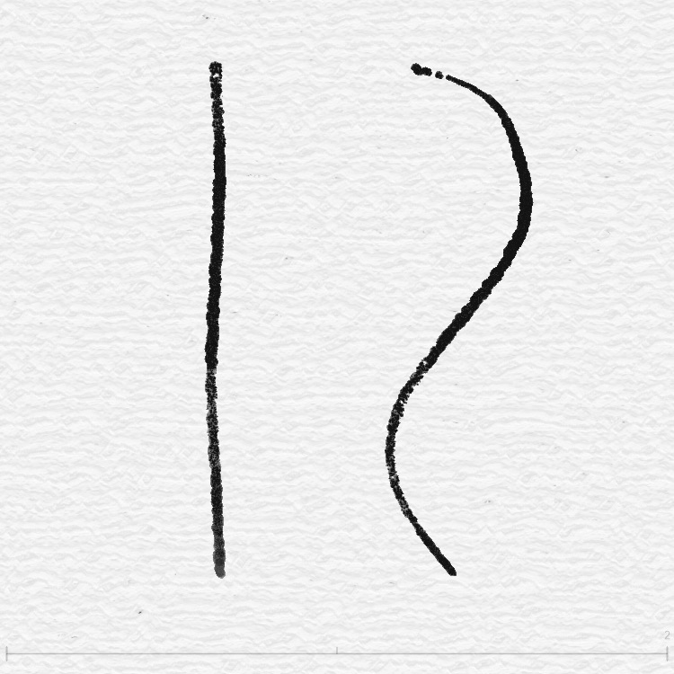
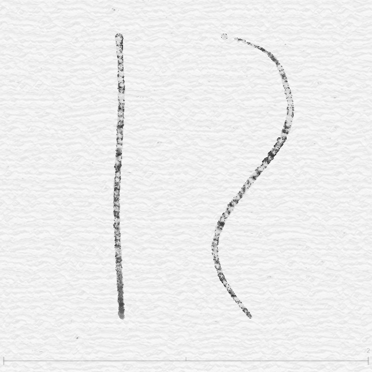
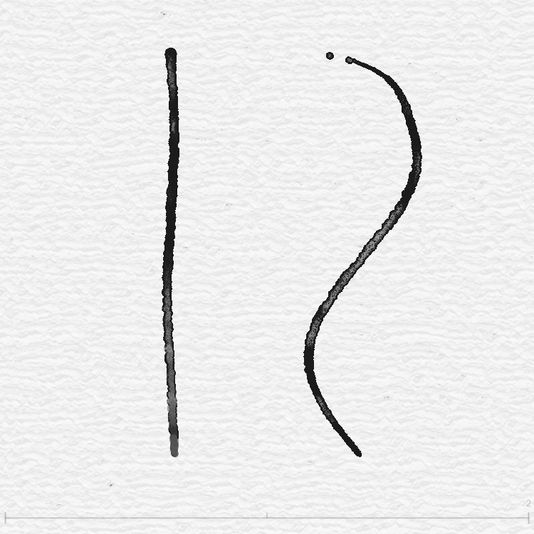
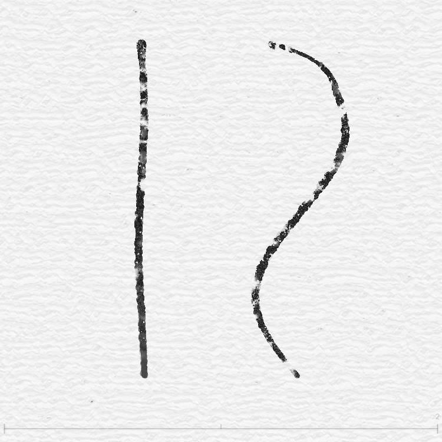
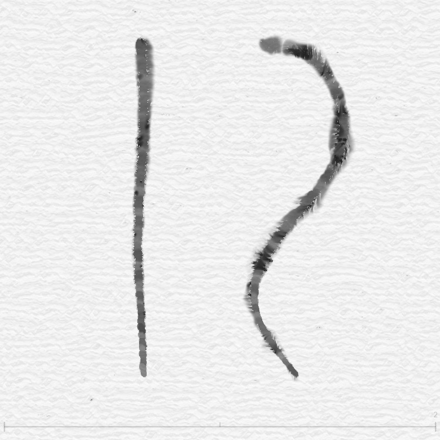
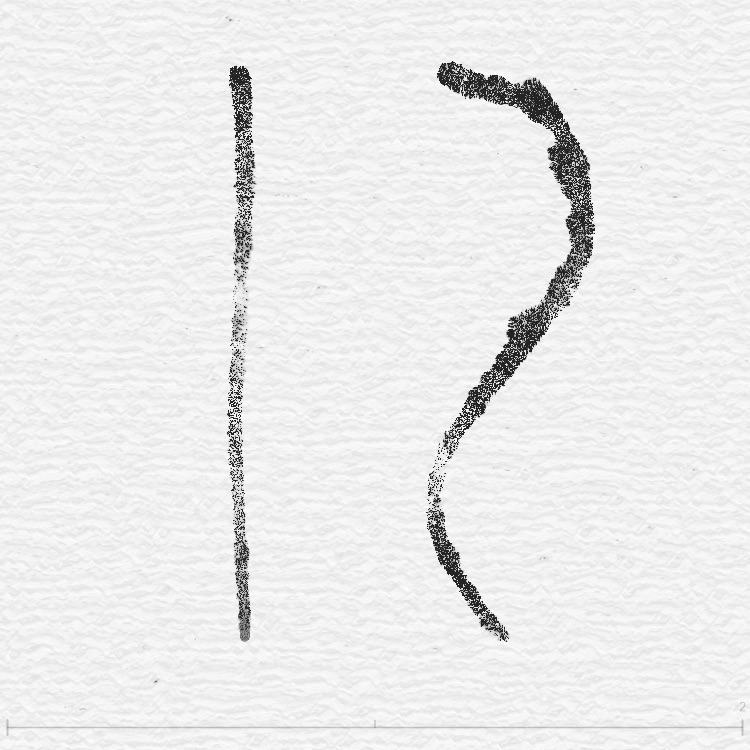

What is the feedback shader?
How feedback.frag works
Key: feedbackResult = min(original, offset) — ink spreads but never appears from nowhere.
📖 Further reading: On decomposing painting materials into "medium flow" and "pigment diffusion" data layers, see kynd's Codifying materials
Force field: invisible wind
Concept forceMap — wind map
The force field (forceMap) is a "wind map" the size of the canvas. Each point stores:
- Wind speed in X (left or right? how strong?)
- Wind speed in Y (up or down? how strong?)
Imagine a large sheet of paper with a small fan at every position, each blowing in a different direction and strength.
When you put ink on the paper, the ink is pushed by the nearby fans and flows in the wind direction.
That is why ink does not spread evenly in all directions but has a sense of direction—the force field defines the wind.
What determines the wind direction? Two sources:
1. Brush stroke force field
As you draw, mouse movement direction and speed produce the force field. A fast stroke to the right makes the field point right.
2. Flow Effect force field
If Flow Effect is enabled, the program uses math noise to generate a continuously changing force field—like gusts of wind.
forceMap value = (0.5, 0.5) → no wind (still)
forceMap value = (0.8, 0.5) → blowing right
forceMap value = (0.2, 0.7) → blowing down-left
// Conversion:
actual force = (forceMap value − 0.5) × force × 0.2
Noise primer: the art of randomness
Concept What is noise?
Across the six ink effects you will see "noise" everywhere. It is the basis of all natural texture.
Imagine looking down at mountain terrain from a plane:
From far away, the range has large undulations (low-frequency noise = big waves). Closer in, you see medium hills (mid-frequency). Up close, small stones and gravel (high-frequency = fine detail).
Layering these three scales gives natural terrain. Ink effects do the same—stacking different frequencies of noise to produce natural texture.
The program uses two kinds of noise:
Hash noise (fast random)
Like rolling dice: give it a coordinate and it returns a "random-looking" number. Very fast, but results are more "grainy".
// Fraction of trig function gives "pseudo-random"
Used for: grain, speckle, quick noise
Smooth noise (smooth transition)
Unlike hash, neighboring points influence each other, giving continuous, hill-like variation.
// Result is soft, continuous waves
Used for: clouds, water stains, fiber texture, large-area color variation
Frequency = level of detail
Noise "frequency" controls texture scale:
| Frequency | Effect | Use |
|---|---|---|
| Low (2–15 Hz) | Large light/dark variation | Wide bleed, clouds |
| Mid (30–80 Hz) | Medium texture | Fiber, water-edge |
| High (100–400 Hz) | Fine grain | Sandpaper, charcoal particles |
| Very high (400–600 Hz) | Very fine noise | Film grain, micro texture |
Much of the difference between the six ink modes is which frequency mix each uses.
Mode 0 — Ink in water (fly white)
useSharpen < 0.5

Imagine a drop of ink in a glass of water. The ink spreads slowly; edges blur and the whole gets lighter. If you blow gently (force field), the ink drifts in that direction.
Mode 0 is the basic ink diffusion. It does the following:
1. Base diffusion
Take the darker of the original and force-offset positions so ink flows with the field.
2. Four-direction diffusion
Not only along the field: up, down, left, and right are weighted and averaged. Weights depend on:
- Ink density difference with neighbors (larger difference → stronger diffusion)
- Whether the direction aligns with the field (aligned → extra boost)
3. Density gradient
Force direction creates light/dark contrast—the side the field points to is slightly brighter, the back side slightly darker. Like real ink: leading edge thinner (lighter), trailing edge thicker (darker).
4. Slight edge brightening
Low-density (edge) areas are slightly brightened to mimic real ink fading at the edge on paper.
Mode 1 — Charcoal on rough paper
useSharpen < 1.5

Imagine drawing with charcoal on rough watercolor paper. Where the stick hits the bumps it leaves marks; in the dips it stays white. The result is a strong grain—up close every dot differs, from afar it reads as a solid tone.
Mode 1 is the grain-heavy mode. It works like this:
White brush vs normal brush
Mode 1 first checks if the brush is white. For white brush it uses four layers of hash noise for pure particle texture; for normal brush it adds glow sampling and Laplacian sharpening.
Four-layer grain stack
Signature of Mode 1. Four hash noise layers at different frequencies, coarse to fine:
| Layer | Frequency | Strength | Effect |
|---|---|---|---|
| Coarse | 25–50 Hz | 0.15 | Large light/dark spots |
| Medium | 110–180 Hz | 0.12 | Medium texture |
| Fine | 320 Hz | 0.10 | Fine sand-like grain |
| Very fine | 480–620 Hz | 0.08 | Film-like micro noise |
Then one smooth noise layer (120 Hz) blends everything softly.
Glow + sharpen (normal brush only)
Noise splits the image into two regions:
- Noise > 0.5 → "glow" (blur sample) for soft ink spread
- Noise < 0.5 → "sharpen" (Laplacian edge boost) for crisper lines
This random mix gives soft and sharp in the same stroke, much like real charcoal.
Mode 2 — Watercolor bleed (marker)
useSharpen < 2.5

Imagine a watercolor stroke on wet paper. The edge of the stroke gets darker (water evaporating pushes pigment to the edge); the center stays lighter. That is edge deposition, one of watercolor's most characteristic effects.
Mode 2 is built around this:
1. Edge detection
The shader samples in four directions and measures how much brightness changes. Large change means edge.
// Higher gradient = stronger edge
2. Darken edges, lighten center
Where edges are detected:
- Edge → darken (deposition)
- Center → slightly lighten (water carrying pigment away)
White brush and normal brush use different strengths—white is subtler.
3. Organic noise texture
On top of the edge effect, organic noise makes the bleed non-uniform. Noise frequency drifts with time (mouseCount) so the texture keeps "living".
4. Flow texture
A final "flow noise" layer—fine texture from random direction—like water trails on paper.
Mode 3 — Rice paper brush (salt)
useSharpen < 3.5

Imagine writing with a brush on rice paper. The paper has a clear fiber direction—ink travels farther along the fibers and shorter across them. The result is a "fuzzy", directional edge.
1. Column texture
Mode 3 uses a "column distance field" to create vertical fiber lines:
dist = sdColumn(coord × 100, 18.0, 20.0)
// Closer to column → darker (fiber)
Force direction tilts the fibers so they match stroke direction.
2. Two fiber layers
Coarse fiber (40–80 Hz) for large bundles; fine (200–400 Hz) for detail inside. Together they give the "coarse and fine" rice-paper look.
3. Tone variation
Three smoothNoise layers (50, 100, 200 Hz) add natural unevenness—like real brush on rice paper, more ink in some spots, less in others.
Mode 4 — Premium watercolor (bleed)
useSharpen < 4.5

If Mode 0 is "beginner watercolor", Mode 4 is pro watercolor. It combines several watercolor behaviors: white spots, edge deposition, grain, directional flow—all in one.
Core difference: three-sample offset
Mode 4 does not simply push ink along the force. On top of the force direction it adds two extra offset directions (random angles from noise).
It then takes the darkest of the three samples so diffusion is more natural and irregular.
sB2 = texture2D(offset direction 2)
sB3 = texture2D(offset direction 3)
result = min(sB1, min(sB2, sB3))
// One of three = richer, more irregular
White spots
Three noise layers (2 Hz + 50 Hz + 400 Hz) create "white spots"—random small holes in the ink, like paper texture preventing full coverage.
Edge deposition + four grain layers
When a new stroke is detected (enough force strength):
- Edge detection → darken edges (same idea as Mode 2)
- Four hash grain layers (same as Mode 1)
- Organic noise + flow texture (same as Mode 2)
Mode 4 is essentially the best of the previous three modes combined.
Force strength scaling
Mode 4 scales effect strength by actual force. Weak force → subtle (about 30%). Strong force → full effect (up to 150%). So hard strokes look strong and light strokes stay subtle.
Mode 5 — Slow bleed (fiber)
useSharpen < 5.5

Mode 5 is like Mode 4 in slow motion. Imagine dropping watercolor on very thick paper—ink seeps slowly, step by step.
Difference from Mode 4
| Item | Mode 4 | Mode 5 |
|---|---|---|
| Diffusion speed | Normal | × 0.3 (three times slower) |
| Texture strength | × 1.0 | × 2.0 (white brush doubled) |
| Time input | mouseCount (cyclic) | Accumulated mouseCount (no wrap) |
Why use "accumulated mouseCount"?
Default mouseCount wraps every 40 frames (39 → 0). In Mode 4 that is barely visible; in Mode 5, with slow diffusion, the wrap causes a sudden jump in texture (time noise input changes abruptly).
Fix: use accumulated mouseCount (mouseCountAccumulated)—it only increases, never wraps. Then time-based noise changes smoothly.
Six modes comparison table
| Mode | UI name | Core technique | Character | Best for |
|---|---|---|---|---|
| 0 | Fly white | Directional diffusion + density gradient | Basic ink diffusion | Splash, abstract |
| 1 | Squeeze | Four-layer hash grain + glow/sharpen | Strongest grain | Charcoal, pastel |
| 2 | Marker | Edge detection + light/dark offset | Dark edge, light center | Watercolor figure, landscape |
| 3 | Salt | Column distance field + directional fiber | Fiber, direction | Calligraphy, ink wash |
| 4 | Bleed | Three-sample offset + white spots + full set | Richest, most natural | Pro watercolor, illustration |
| 5 | Fiber | Same as 4 but speed × 0.3 | Slow, fine, evolving | Subtle bleed, background |
Edge deposition
Shader applyEdgeEffect — shared edge function
Besides Mode 2's own edge logic, the feedback shader has a shared edge deposition function that any mode can call.
This function is an "edge booster"—it finds ink edges and darkens them, like the dark ring left when watercolor dries.
How it works:
Step 1: Spatial mask (40% coverage)
Noise decides which regions get the effect. Only about 40% of areas are affected so the result is natural, not a uniform dark ring.
Step 2: Edge detection
Sample in four directions (distance 1.5–2.3 px with random variation), compute brightness gradient. Where gradient exceeds a threshold = edge.
Step 3: Strong edges only
smoothstep(0.85, 0.95, edgeMask) ensures darkening only on the strongest edges; mid-tone is unchanged.
Step 4: Blend toward black
Blend edge color toward black (darkening 0.3–0.7) to produce the dark deposition look.